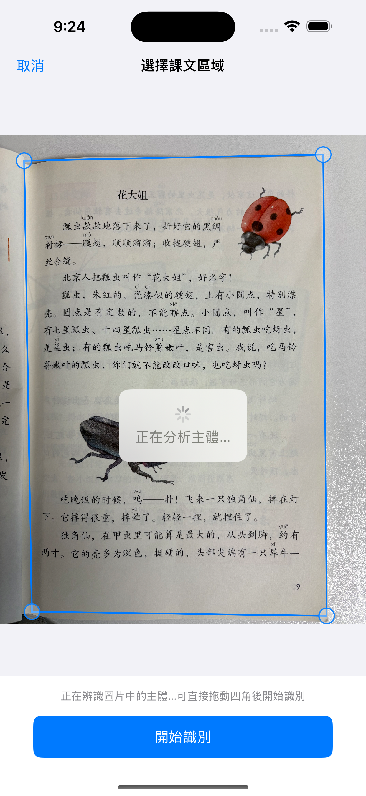
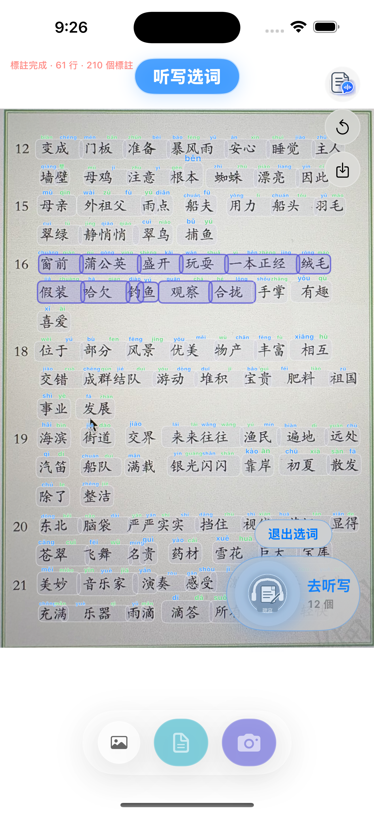
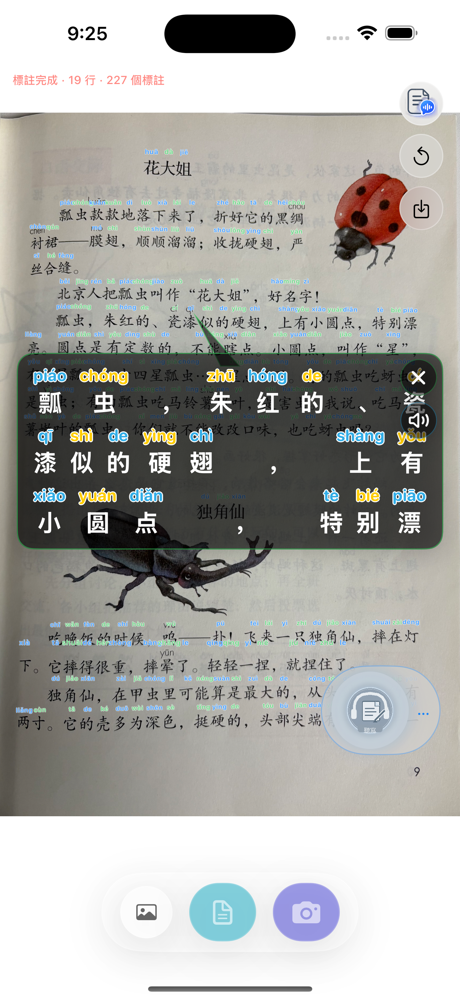
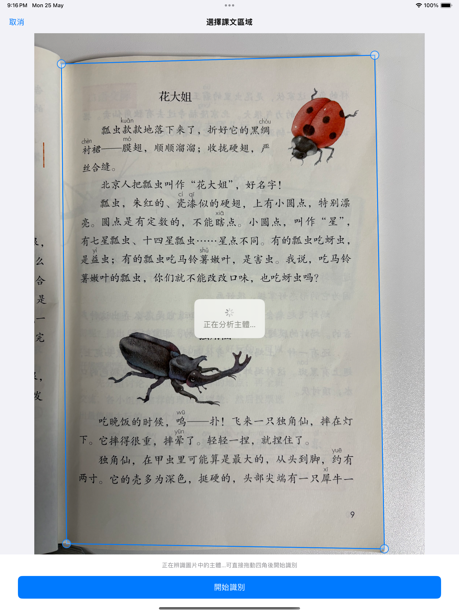

新增放大閱讀與全文朗讀
辨識完成後，可點按查看目前行的放大閱讀浮窗，也可按課文順序全文朗讀，適合跟讀與檢查生字詞。
- 點按後放大查看目前行
- 按閱讀順序朗讀整頁內容
- 更適合較長課文的通讀與複習
新增閱讀輔助與聽寫選詞，並把相簿匯入、直接拍照後的課文區域辨識做得更穩、更容易調整。
拼音相機會在裝置本地完成圖片辨識、拼音標註與聽寫準備流程，適合課文閱讀、詞語複習和課後練習。
App Store 審核通過後，可透過 App Store 連結或二維碼下載。


這次版本圍繞「看得清、選得準、練得順」做了三組使用者可見更新。
辨識完成後，可點按查看目前行的放大閱讀浮窗，也可按課文順序全文朗讀，適合跟讀與檢查生字詞。
在標註結果上直接滑動圈詞，進入聽寫列表後可調整讀速、讀詞間隔與順序，讓課後練習更順手。
從相簿匯入或直接拍照後，應用會先分析課文主體，自動給出辨識區域；如果不滿意，可以拖動四角微調再開始辨識。
建議從相簿匯入或直接拍照開始，確認課文區域後再進入標註、閱讀和聽寫步驟。
從相簿匯入或直接拍照後，應用會自動分析圖片中的主要課文區域。若邊緣或傾斜不理想，可拖動四角調整。
辨識完成後會自動為漢字標註拼音。點按內容可放大閱讀目前行，也可使用全文朗讀輔助整頁通讀。

在 OCR 結果頁滑動圈出要練的詞語，點「去聽寫」後即可進入詞語列表，繼續調整讀速、間隔和順序。

以下為 2.2 版本在 iPhone 與 iPad 上的實際介面截圖。
拼音相機堅持以本地處理為主。圖片辨識、課文區域分析、拼音標註與聽寫準備都在裝置端完成，不會把圖片內容上傳到開發者伺服器。

二維碼對應 App Store 下載連結。審核通過後，可直接掃碼安裝。